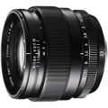

器材库 > APS画幅镜头 > XF 23/1.4 R

详细规格
镜头类型
广角镜头
发布日期
2013-09-05
厂家推荐价格
94,800.00 （日元）
焦距
23mm
等效35mm画幅焦距
35mm
最大光圈
f/1.4
最小光圈
f/16
视角（对角）
63.4
镜头结构
11片/8组
非球面镜片
1片
光圈叶片
7片
最近对焦距离
60cm, 微距28cm
最大放大倍率
0.1倍
滤镜口径
62mm
镜头卡口
Fujifilm XF
防抖
否
颜色
黑色
尺寸
72 x 63mm
重量
300g
君子二分之一2018-03-23 23:153.83 分
操作性 4.00耐用性 4.00性价比 4.00解像力 3.50色彩还原 4.00机械结构 3.50
nariko2015-12-22 18:154.83 分
操作性 4.50耐用性 5.00性价比 5.00解像力 5.00色彩还原 5.00机械结构 4.50
花落花无常2015-01-10 22:164.83 分
操作性 5.00耐用性 5.00性价比 4.50解像力 5.00色彩还原 5.00机械结构 4.50
jackdjy2014-04-24 15:254.58 分
操作性 4.50耐用性 4.50性价比 4.00解像力 5.00色彩还原 5.00机械结构 4.50